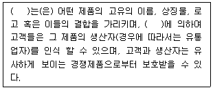
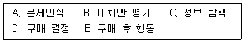
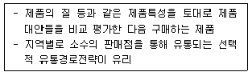
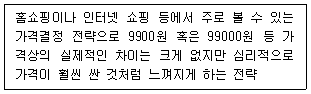
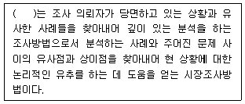
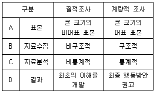
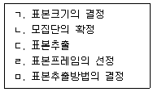
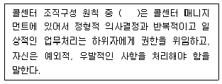
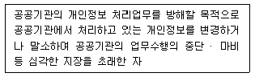

텔레마케팅관리사 (2021-08-14 기출문제)
1과목: 판매관리
1. 다음 중 텔레마케터의 자질에 대한 설명으로 틀린 것은?
- 텔레마케터는 상당한 인내심을 지니고 있어야 한다.
- 텔레마케터의 건전하고 긍정적이며 적극적인 성격은 매우 중요하다.
- 목소리는 상냥하고 부드러우면서도 힘차고 자신감이 넘쳐 보이도록 해야 한다.
- 텔레마케터는 콜 시간, 콜 방향을 리드해서는 안 된다.
(정답률: 91%)

2. 다음 ( )에 공통으로 들어갈 알맞은 단어는?

- 브랜드
- 패키지
- 품질
- 애프터서비스
(정답률: 78%)
3. 가격 차별화전략의 전제조건과 가장 거리가 먼 것은?
- 각 시장을 세분할 수 있어야 한다.
- 각 세분시장은 수요탄력성이 달라야 한다.
- 낮은 가격으로 판매하는 시장에서 비싼 가격으로 판매하는 시장으로 제품의 이전이 가능해야 한다.
- 시장세분화의 비용보다 이익이 더 커야 한다.
(정답률: 73%)
4. 세분시장을 더욱 작게 세분화함으로써 다른 제품들로는 그 욕구가 충족되지 않은 소수의 소비자들을 표적으로 하는 마케팅은?
- 대량 마케팅(mass marketing)
- 니치 마케팅(niche marketing)
- 블루오션 마케팅(blue ocean marketing)
- 관계 마케팅(relationship marketing)
(정답률: 74%)
5. 고객 총생애가치(LTVt)에 대한 설명으로 옳은 것은?
- 고객이 처음으로 자사제품을 구입한 시기를 말한다.
- 고객이 특정 회사의 제품이나 서비스를 처음 구매했을 때부터 시작해서 사망하는 시점까지의 기간을 의미한다.
- 고객이 특정 회사의 제품이나 서비스를 처음 구매했을 때부터 현재까지 구입한 서비스 누계를 말한다.
- 고객이 특정 회사의 제품이나 서비스를 처음 구매했을 때부터 시작해서 마지막으로 구매할 것이라고 판단되는 시점까지 구매가 가능한 제품이나 서비스의 누계액을 의미한다.
(정답률: 62%)
6. 기업이 택할 수 있는 마케팅 전략은 풀(pull)전략과 푸시(push)전략으로 나눌 수 있다. 다음 중 풀(pull)전략의 설명으로 옳지 않은 것은?
- 유통경로 구성원들이 소비자 수요를 창출하여 제품을 찾게 한다.
- 유통경로 구성원들이 제품을 취급하도록 유도한다.
- 고객이 고객의 욕구를 파악하여 직접 제품을 찾게 하는 것이다.
- 인적판매와 판매촉진에 크게 의존하게 된다.
(정답률: 50%)
7. 고객에 대한 구매제안 유형 중 고객 구매이력 등의 관리를 통해 기존에 구매한 고객에게 다른 상품을 구입하도록 하는 제안은?
- cross selling
- up selling
- negative option
- positive option
(정답률: 76%)
8. 다음 중 소비자 구매의사결정 과정을 바르게 나열한 것은?

- A → B → C → D → E
- B → A → C → D → E
- A → C → B → D → E
- B → C → A → D → E
(정답률: 81%)
9. 제품생명주기(PLC)에 관한 설명 중 옳은 것은?
- 도입기에는 유통 비용, 홍보 비용 등 마케팅 비용이 많이 소요되며, 새로운 경쟁자가 시장에 진입하게 된다.
- 성숙기에는 제품 자체의 인지도 제고가 중요한 이슈가 된다.
- 성장기에는 자사 브랜드의 차별성을 강조하는 등의 브랜드 광고가 중요해진다.
- 성장기에는 매출 성장률이 둔화되면서 경쟁사간 치열한 촉진경쟁이 이루어지는 경우가 많다.
(정답률: 55%)
10. 아웃바운드 텔레마케팅의 핵심요소로 볼 수 없는 것은?
- 숙련된 텔레마케터
- 대상고객의 데이터 확보
- 정교한 스크립트와 데이터시트
- 기업주도형 텔레마케팅 프로모션
(정답률: 59%)
11. 다음 중 아웃바운드 텔레마케팅에 해당하지 않는 것은?
- 기존 고객에 대한 추가 판매
- DM(다이렉트 메일) Follow up Call
- DRA(직접 반응 광고) 응대 Call
- 연체 회수 관리 업무
(정답률: 53%)
12. 직접유통경로의 단점이 아닌 것은?
- 시장의 범위가 한정된다.
- 고객으로의 접근이 어렵다.
- 판매자에게 업무가 과중된다.
- 사업확장에 어려움이 따른다.
(정답률: 75%)
13. 기존 고객을 대상으로 하는 데이터베이스 마케팅 전략으로 거리가 가장 먼 것은?
- 고객 무차별마케팅 전략
- 고객 애호도 제고 전략
- 고객유지 전략
- 교차판매 전략
(정답률: 80%)
14. 가격결정의 다양한 주요 원인 중 고정비에 해당하는 것은?
- 조립 작업비
- 판매 수수료
- 재료비
- 빌딩 임대료
(정답률: 65%)
15. 시장세분화에 관한 설명으로 옳지 않은 것은?
- 세분화된 시장 내에서는 이질성이 극대화되도록 해야 한다.
- 효과적인 시장세분화를 위해서는 시장의 규모가 측정 가능해야 한다.
- 나이, 성별, 소득은 인구통계학적 세분화 기준에 속한다.
- 라이프스타일, 성격은 심리도식적 세분화 기준에 속한다.
(정답률: 77%)
16. 아웃바운드 텔레마케팅의 전용상품을 개발할 경우 고려해야 할 사항이 아닌 것은?
- 신뢰성
- 사후관리성
- 상담의 효율성
- 거래조건 변동의 최대화
(정답률: 62%)
17. 소비재 시장의 세분화 변수 중 행동분석적 변수에 포함되지 않는 것은?
- 가격 민감도
- 상표 충성도
- 사용량
- 교육수준
(정답률: 71%)
18. 인바운드 상담 시 요구되는 스킬과 가장 거리가 먼 것은?
- 오감의 능력을 총동원하여 고객의 소리를 경청한다.
- 상품은 비교적 길고, 장황하게 설명해야 한다.
- 고객의 입장에서 말하고 듣는다.
- 자사 상품이 가지고 있는 상품의 장점을 강조한다.
(정답률: 79%)
19. 다음 중 유통경로의 설계과정을 바르게 나열한 것은?
- 유통경로의 목표설정 → 고객욕구분석 → 경로대안의 평가 → 주요 경로대안의 식별
- 고객욕구분석 → 유통경로의 목표설정 → 주요 경로대안의 식별 → 경로대안의 평가
- 고객욕구분석 → 주요 경로대안의 식별 → 유통경로의 목표설정 → 경로대안의 평가
- 고객욕구분석 → 주요 경로대안의 식별 → 경로대안의 평가 → 유통경로의 목표설정
(정답률: 65%)
20. 다음 중 비교적 동질적인 잠재 소비자들의 집합을 가리키는 것은?
- 세분시장
- 인구통계적 군집
- 조직구매자
- 최종소비자
(정답률: 40%)
21. 다음에서 설명하는 소비재의 유형은?

- 편의품
- 선매품
- 전문품
- 산업재
(정답률: 47%)
22. 인바운드 스크립트 구성요소가 아닌 것은?
- 인사/소개
- 탐색질문
- 가치설득
- 통화가능여부 확인
(정답률: 52%)
23. 다음 설명에 해당하는 가격의 유형은?

- 기점가격
- 위신가격
- 단수가격
- 지대가격
(정답률: 60%)
24. 마케팅의 범위를 대중고객과 개별고객으로 구분할 때, 마케팅 촉진수단별 마케팅 범위의 연결이 옳지 않은 것은?
- 광고 - 대중고객
- 인적판매 - 대중고객
- 홍보 - 대중, 개별고객
- PR(Public Relations) - 대중, 개별고객
(정답률: 64%)
25. 포지셔닝 전략을 개발하기 위해서는 기본적으로 시장분석, 기업내부분석, 경쟁사 및 제품 분석이 필요하다. 다음 중 경쟁분석 정보에 해당하는 것은?
- 시장점유율
- 기술상의 노하우
- 성장률
- 인적자원
(정답률: 58%)
2과목: 시장조사
26. 다음 ( )에 알맞은 시장조사 방법은?

- 문헌조사
- 횡단조사
- 사례조사
- 전문가 의견조사
(정답률: 73%)
27. 사전조사에 관한 설명으로 옳지 않은 것은?
- 설문지의 내용이 적절하게 배치되어 있는가를 체크 할 수 있다.
- 본 조사를 위하여 응답자의 장소, 조사장소의 분위기, 응답에 필요한 시간, 응답자 표본의 크기 등이 적절한가를 검토한다.
- 사전조사는 가급적 간접조사 방식을 취한다.
- 사전조사로 파악된 응답자의 의견을 반영하여 조사의 문제점을 보완, 수정한다.
(정답률: 68%)
28. 시장조사 시 발생할 수 있는 윤리적 문제에 관한 설명으로 옳지 않은 것은?
- 조사내용은 통계법에 의해 지정된 통계 목적 이외에 사용하지 못하도록 규정되어 있다.
- 부작용을 일으킬 수 있는 제품에 대한 제품테스트를 진행하는 경우 응답자들에게 발생 가능한 문제점을 반드시 설명해주어야 한다.
- 조사회사는 한 업종에서 한 업체의 조사만을 실시하는 것이 원칙이나 두 개의 업체에 대한 조사를 실시한다면 특정부서가 전담하도록 해야 한다.
- 시장조사를 의뢰하는 경우 계약 이외의 것을 요구하는 행동은 바람직하지 못하다.
(정답률: 67%)
29. 질적 조사와 계량적 조사의 비교가 잘못된 것은?

- A
- B
- C
- D
(정답률: 34%)
30. 조사자가 현재의 조사프로젝트를 위하여 직접 수집한 자료가 아니라 어떤 조사프로젝트의 다른 조사목적과 관련하여 조사내부 혹은 외부의 특정한 조사주체에 의해 기존에 이미 작성된 자료는?
- 2차 자료
- 1차 자료
- 현장자료
- 원 자료
(정답률: 59%)
31. 모집단을 동질적인 여러 소그룹으로 나눈 후 특정 소그룹을 표본으로 추출하고 선택된 전체를 조사대상으로 삼아 조사하는 표본추출 방법은?
- 군집 표본추출
- 층화 표본추출
- 체계적 표본추출
- 단순무작위 표본추출
(정답률: 53%)
32. 다음 중 시장조사의 역할이 아닌 것은?
- 기업의 의사결정 질을 개선한다.
- 기업의 문제해결에 도움을 주는 정보를 제공한다.
- 마케팅을 효과적으로 수행할 수 있도록 도움을 준다.
- 소비자에 대한 경영자의 영향력을 증대시킨다.
(정답률: 73%)
33. 연구자가 조사대상자와 관련하여 지켜야할 윤리규범에 해당하지 않는 것은?
- 익명성
- 사후 동의
- 비밀성
- 자발적 참여
(정답률: 48%)
34. 측정도구의 타당도에 관한 설명으로 옳지 않은 것은?
- 내용타당도(content validity)는 전문가의 판단에 기초한다.
- 구성타당도(construct validity)는 예측타당도(predictive validity)라 한다.
- 동시타당도(concurrent validity)는 신뢰할 수 있는 다른 측정도구와 비교하는 것이다.
- 기준관련 타당도(criterion-related validity)는 내용타당도보다 경험적 검증이 용이하다.
(정답률: 33%)
35. 시장 조사를 위한 자료 수집 중 1차 자료에 해당하지 않는 것은?
- 고객 행동에 대한 관찰
- 실험실 조사에서의 소비자 반응 측정
- 대학이나 연구소의 일반 소비자 조사 자료
- 일반 소비자나 유통점 주인들을 대상으로 한 서베이
(정답률: 59%)
36. 조사응답자가 가진 4가지 권리 중 조사 시 성적선호, 약물복용 등 개인적으로 민감한 질문을 하지 않도록 하는 것과 관련된 것은?
- 참여를 선택할 권리
- 안전할 권리
- 조사에 대해 알 권리
- 사생활을 보호받을 권리
(정답률: 73%)
37. 비만아동들의 식습관을 파악하기 위해 실시하는 관찰방법의 유형으로 가장 적합한 것은?
- 참여관찰
- 준참여관찰
- 비참여관찰
- 실험관찰
(정답률: 29%)
38. 척도모형은 크게 자극을 변환하는 기법과 응답자를 변환하는 기법으로 나눌 수 있다. 자극을 변환하는 기법으로 나열된 것은?
- 서스톤척도법, 어의척도법
- 서스톤척도법, 리커트합산법
- 리커트합산법, Q소오트기법
- Q소오트기법, 어의척도법
(정답률: 25%)
39. 우편조사의 응답률에 영향을 미치는 요인과 가장 거리가 먼 것은?
- 응답집단의 동질성
- 응답자의 지역적 범위
- 질문지의 양식 및 우송방법
- 조사주관기관 및 지원 단체의 성격
(정답률: 31%)
40. 표본추출과정을 순서대로 나열한 것은?

- ㄹ → ㄴ → ㅁ → ㄱ → ㄷ
- ㄱ → ㄷ → ㄴ → ㄹ → ㅁ
- ㄴ → ㄹ → ㅁ → ㄱ → ㄷ
- ㅁ → ㄴ → ㄹ → ㄱ → ㄷ
(정답률: 56%)
41. 다음 중 조사원에 대한 통제가 가능하고, 응답률이 높은 편이며, 시간과 비용이 비교적 적게 드는 조사는?
- 우편조사
- 방문조사
- 전화조사
- 간접조사
(정답률: 73%)
42. 표본의 규모가 큰 상업적 조사에서 사용할 수 있는 표본추출 방법으로 가장 적합한 것은?
- 임의 표본추출
- 할당 표본추출
- 목적 표본추출
- 일반 표본추출
(정답률: 45%)
43. 명목척도의 특성으로 옳지 않은 것은?
- 상호 배타적인 범주로 구분하기 위하여 사용한다.
- 정보의 수준이 가장 높은 척도이다.
- 우열을 표시하는 것이 아니다.
- 질적변수로 구성되어 있다.
(정답률: 44%)
44. 조사와 관련된 주제나 변수와 관련된 이전의 연구, 보고서, 관련 서적, 각종 2차 자료를 이용하여 사전 지식을 얻고 조사에 대한 간접경험을 하는 조사방법은?
- 횡단조사
- 문헌조사
- 전문가 의견조사
- 사례조사
(정답률: 59%)
45. 다음 중 무응답 오류의 의미로 옳은 것은?
- 데이터 분석에서 나타나는 오류
- 부적절한 질문으로 인하여 나타나는 오류
- 응답자의 거절이나 비접촉으로 나타나는 오류
- 조사와 관련 없는 응답자를 선정하여 나타나는 오류
(정답률: 66%)
46. 다음에 제시되어 있는 설문지 문항 중 잘못 작성된 것은?
- 귀하의 성별은?
Ⓐ 남자 Ⓑ 여자 - 귀하의 자녀는 몇 명입니까?
Ⓐ 없다 Ⓑ 1명 Ⓒ 2명 Ⓓ 3명 이상 - 귀하의 월평균 수입은 어느 정도입니까?
Ⓐ 100만원 미만
Ⓑ 100만원 이상 ~ 200만원 미만
Ⓒ 200만원 이상 ~ 300만원 미만
Ⓓ 300만원 이상 - 귀하의 월평균 용돈은?
Ⓐ 20만원 이하
Ⓑ 20만원 이상 ~ 30만원 이하
Ⓒ 30만원 이상 ~ 40만원 이하
Ⓓ 40만원 이상
(정답률: 68%)
47. 우편조사법의 특징으로 옳지 않은 것은?
- 대인면접법에 비해 비용이 많이 든다.
- 지역에 제한 받지 않고 조사가 가능하다.
- 대인면접법보다 상대적으로 응답률이 낮다.
- 전화조사법에 비해 자료수집 기간이 길다.
(정답률: 66%)
48. 전수조사와 표본조사에 관한 설명으로 옳지 않은 것은?
- 표본조사는 전수조사에 비하여 시간과 비용을 줄일 수 있다.
- 전수조사 자체가 불가능한 경우에는 표본조사를 실시해야 하는 경우가 있다.
- 비표본오류 때문에 전수조사가 표본조사보다 부정확한 결과를 산출할 가능성이 있다.
- 일반적으로 표본조사에 비하여 전수조사가 많이 사용된다.
(정답률: 45%)
49. 효과적인 전화조사를 위한 커뮤니케이션 방법으로 적합하지 않은 것은?
- 질문에 대하여 효과적으로 답변할 수 있도록 조사자가 생각하는 답을 사전에 응답자에게 언급한다.
- 응답자가 질문내용을 명확하게 알아들을 수 있도록 해야 한다.
- 응답자를 후원하고 격려하여 응답자가 편안한 분위기에서 응답할 수 있도록 한다.
- 응답자의 대답을 반복하거나 복창하여 답변을 확인한다.
(정답률: 71%)
50. 다음 중 기술적 조사에 해당하지 않는 것은?
- 종단조사
- 횡단조사
- 실험조사
- 패널조사
(정답률: 28%)
3과목: 텔레마케팅관리
51. 개인 혹은 집단의 조직변화에 대한 거부적 행위를 변화의 저항(resistance to change)이라고 하는데 이 변수에 속하지 않는 것은?
- 갈등
- 근무의욕 감퇴
- 조직 내 불신
- 정시 출퇴근
(정답률: 71%)
52. 다음 중 콜 센터 운영의 원칙으로 가장 옳은 것은?
- 콜 센터와 통계화는 거리가 멀다.
- 생산성 측정단위는 개괄적인 것이어야 한다.
- 실시간 코칭은 생산성에 악영향을 미친다.
- 관리자는 현장주의를 원칙으로 해야 한다.
(정답률: 59%)
53. 조직변화에 관한 설명으로 옳지 않은 것은?
- 조직변화의 내부요인으로는 법적 규제의 강화, 급속한 기술발전 등이 있다.
- 조직변화란 조직유효성과 능률 극대화, 구성원의 만족도 향상을 위해 조직의 구성요소를 변화시키는 것을 말한다.
- 조직변화는 자연적 변화와 계획적 변화로 구분할 수 있다.
- 조직변화 시 저항하는 구성원들의 협조가 필요할 때에는 교육과 원활한 의사소통을 통해 저항을 조정할 수 있다.
(정답률: 52%)
54. 바람직한 콜센터 리더의 자세가 아닌 것은?
- 콜센터내 긍정적인 분위기 활성화를 위해 항상 노력한다.
- 생산성과 통화품질의 목표를 위해 조직적 계획을 세우고 실행한다.
- 콜센터의 수익성을 높이기 위해 팀내의 경쟁심을 유발한다.
- 상담원의 업무능력향상을 위해 정기적으로 교육훈련을 실시한다.
(정답률: 69%)
55. 텔레마케팅 운영 시 상담품질관리를 통한 장점이 잘못 연결된 것은?
- 고객 - 서비스에 대한 만족 및 불만족 요소를 전달할 수 있다.
- 회사 - 이미지 향상으로 고객확보와 이익이 발생한다.
- 상담사 - 상담능력이 향상된다.
- 모니터링 담당자 - 코칭 기술을 향상시킬 수 있다.
(정답률: 24%)
56. 임금체계에 따른 분류방법으로 적절하지 않은 것은?
- 연공급
- 직무급
- 직능급
- 성과급
(정답률: 50%)
57. 피들러(Fidler)의 상황리더십이론에서 제시한 상황 호의성 변수로 볼 수 없는 것은?
- 과업구조
- 지위권력
- 구성원의 성숙도
- 리더와 구성원과의 관계
(정답률: 26%)
58. 콜센터 상담원 교육 관리에 대한 설명으로 틀린 것은?
- 각 직무별 교육계획안은 부서에서만 작성한다.
- 교육생이 이수하지 못한 교과목은 이수 예정일을 기재한다.
- 교육생이 이수한 교과목은 이수한 날짜를 양식에 표시한다.
- 교육과정에 참여하기로 한 직원에게는 정기적(혹은 월별로) 통지서를 보낸다.
(정답률: 68%)
59. 다음 중 인하우스 텔레마케팅(In-House Telemarketing)에 대한 설명으로 가장 옳은 것은?
- 소비자를 대상으로 텔레마케팅 활동을 하는 것이다.
- 기업을 소구대상으로 하여 텔레마케팅 활동을 하는 것이다.
- 자체적으로 텔레마케팅센터를 설치하여 텔레마케팅 활동을 하는 것이다.
- 텔레마케팅 경험이 없는 경우에 외부에 위탁하여 텔레마케팅 활동을 하는 것이다.
(정답률: 61%)
60. 개인 성과평가의 신뢰성과 공정성을 확보하기 위한 방법으로 틀린 것은?
- 다면평가를 효율적으로 활용한다.
- 평가자에 대해 평가체계, 평가기법 등의 종합적인 평가관련 교육을 강화한다.
- 피평가자 보호를 위해 평가결과를 공개하지 않고 평가결과에 대한 면담을 지양한다.
- 피평가자가 평가결과에 불만이 있는 경우 이의제기를 할 수 있는 소통채널을 운영한다.
(정답률: 62%)
61. 다음 중 콜센터 발전 방향과 가장 거리가 먼 것은?
- 코스트(cost) 센터에서 프로핏(profit) 센터로 변화
- 고객관계 중심에서 생산성 중심으로 운영관점의 변화
- 전화 센터에서 멀티미디어 센터로 변화
- 높은 이직율에서 커리어패스(career path)의 직업으로 변화
(정답률: 67%)
62. 콜센터 조직의 특징으로 옳은 것은?
- 고객과 비대면 접촉이 일반화된 조직이다.
- 초기 조직적응이 비교적 덜 중시되는 조직이다.
- 아웃소싱 활용의 보편화로 인해 이직률이 낮은 조직이다.
- 직업에 대한 만족감, 적극성, 고객응대 수준 등 상담원의 개인 차이가 별로 나지 않는 조직이다.
(정답률: 69%)
63. 모집은 조직이 필요로 하는 인력이 조직에 관심을 갖고 지원하도록 이끄는 과정을 의미하며 내부모집과 외부모집으로 구분된다. 내부모집과 외부모집을 통한 인력활용의 특징으로 옳은 것은?
- 내부인력 활용 시 인력개발 비용을 절감할 수 있다.
- 외부인력 활용 시 안정되기까지 적응기간이 소요된다.
- 내부인력 활용 시 부적격자가 승진할 위험성이 있다.
- 외부인력 활용 시 모집범위가 제한적이다.
(정답률: 48%)
64. 상담 모니터링 평가결과를 가지고 활용할 수 있는 분야가 아닌 것은?
- 통합 품질측정
- 개별 코칭
- 보상과 인정
- 콜 예측
(정답률: 50%)
65. 조직문화에 관한 설명으로 거리가 먼 것은?
- 조직의 전략수행에 영향을 미친다.
- 조직 내 집단 간 갈등에 영향을 미친다.
- 약한 문화는 기업 내에 가치관의 공유도가 높으나 그 실천에 있어서 일관성과 체계가 미흡한 경우를 말한다.
- 조직의 합병 등을 시도할 경우 기업 간 조직문화를 고려하여야 한다.
(정답률: 62%)
66. 콜센터의 통화품질에 관한 설명이 아닌 것은?
- 콜센터의 통화에 대한 품질과 경쟁력을 동시에 평가한다.
- 기업과 고객 간에 이루어지는 통화에서 느껴지는 품질의 정도이다.
- 콜센터내 사적인 통화 방지를 위함이다.
- 궁극적인 목적은 콜센터 경영의 질을 향상시키는 것이다.
(정답률: 62%)
67. 다음 중 콜센터의 인적자원관리 방안으로 적합하지 않은 것은?
- 동기부여 프로그램 운영
- 콜센터 리더 육성 프로그램 운영
- 상담원 수준별 교육훈련 프로그램 운영
- 상담원의 안정을 위한 고정급의 급여체계로 개선
(정답률: 65%)
68. 다음 ( )에 알맞은 용어는?

- 예외의 원칙
- 전문화의 원칙
- 명령일원화의 원칙
- 책임과 권한의 원칙
(정답률: 31%)
69. 다음 중 콜센터 신입 상담원 교육과정의 내용으로 적절하지 않은 것은?
- 기초업무지식
- 콜 분석 및 예측
- 커뮤니케이션 스킬
- 회사 전반적인 기초 사항
(정답률: 60%)
70. 인적자원관리의 구체적 기능에 대한 설명으로 옳은 것은?
- 확보관리기능이란 개인, 조직 간의 이해관계를 합리적으로 조정하기 위한 고충을 처리하는 것이다.
- 개발관리기능이란 조직목표 달성에 필요한 적절한 인력의 모집, 선발, 배치를 하는 것이다.
- 보상관리기능이란 조직목표 달성을 위한 인력의 유능성을 지속하기 위한 교육, 훈련을 하는 것이다.
- 유지관리기능이란 근로조건의 개선 및 노동질서의 유지 발전 향상을 위한 제반문제를 해결하는 것이다.
(정답률: 51%)
71. 인적자원의 가치를 체계적이고 합리적으로 측정하기 위한 지표에 관한 설명으로 옳지 않은 것은?
- 인적자본 수익성지표: 종업원 단위당 생산성
- 인적자본 경제적 부가가치지표: 종업원 단위당 실제 기업 이익
- 인적자본 투자수익률지표: 인적 자원에 대한 단위당 매출액
- 인적자본 시장가치지표: 종업원 단위당 지적자산 크기
(정답률: 26%)
72. 리더십의 효과는 콜센터 리더가 상담사의 개인적 특성과 환경적 특성에 따른 상황적 변수를 잘 파악하여 이에 맞는 리더십 유형을 사용할 때 클 수 있다. 리더십 유형 중 참여적 리더십에 대한 설명으로 옳은 것은?
- 도전적 목표 설정과 이를 달성하기 위하여 상담사를 독려하여 업적 향상을 추구하는 유형이다.
- 상담사의 욕구, 작업환경에 관심을 갖고 상담사의 상호 만족스러운 인간관계를 강조하는 유형이다.
- 상담사는 자신에게 기대되는 것을 정확히 알고, 콜센터 리더는 상담사에게 구체적인 지침을 제공하는 유형이다.
- 상담사와 정보를 교환하고 공통의 의사결정을 추구하는 유형이다.
(정답률: 29%)
73. SMART 성과 목표 설정 항목 중 S에 해당하는 것은?
- Specific
- Special
- Speed
- Social
(정답률: 45%)
74. 인사방침이란 어떻게 인적자원을 관리할 것인가에 대한 의사결정이다. 모집을 위한 적절한 의사방침이 아닌 것은?
- 급여수준
- 임의고용정책
- 이미지광고
- 내부공급원
(정답률: 24%)
75. 텔레마케팅 활용분야 중에서 아웃바운드 텔레마케팅에 해당하는 것은?
- 상품 판매
- 고객 불만 접수
- A/S 접수
- 전화번호 안내
(정답률: 51%)
4과목: 고객응대
76. 고객의 이야기를 효율적으로 듣는 것을 방해하는 개인적인 장애요인이 아닌 것은?
- 편견
- 청각장애
- 사고의 속도
- 정보과잉
(정답률: 40%)
77. 텔레마케팅에서 CRM의 성공전략으로 거리가 먼 것은?
- 고객을 중심으로 거래 데이터가 통합되어야 한다.
- 고객 분석 결과를 마케팅에 활용하기 위해 보유상품 및 서비스에 대한 기준을 상담원에게 일임시켜야 한다.
- 고객 분석을 위한 고객의 상세정보가 수집되어야 한다.
- 고객 분석 결과를 활용할 수 있도록 제반 업무절차가 정립되고 시행되어야 한다.
(정답률: 59%)
78. 양방향 의사소통의 구성요건에 해당하지 않는 것은?
- 의사소통을 일으키는 발신자가 있어야 한다.
- 발신된 메시지를 받아들이는 수신자가 있어야 한다.
- 발신자와 수신자 사이에 의사소통이 일어나는 통로가 있어야 한다.
- 말하기와 쓰기가 이루어질 수 있는 환경이 필수적이다.
(정답률: 68%)
79. 빅데이터의 3가지 특징(3V)에 해당하지 않는 것은?
- Virtual(가상성)
- Variety(다양성)
- Volume(데이터의 양)
- Velocity(속도)
(정답률: 55%)
80. 고객과 상담 시 상담사가 가급적 피해야 할 표현은?
- 적절한 경어의 사용
- 표준말
- 긍정적인 말
- 단정적인 말
(정답률: 65%)
81. 마케팅 커뮤니케이션 분류에 속하지 않는 것은?
- 광고 커뮤니케이션
- 인적판매 커뮤니케이션
- 감성 커뮤니케이션
- PR과 퍼블리시티
(정답률: 40%)
82. 개인정보보호법령상 다음에 해당할 경우 벌칙규정은?

- 2년 이하의 징역 또는 2천만원 이하의 벌금
- 3년 이하의 징역 또는 3천만원 이하의 벌금
- 5년 이하의 징역 또는 5천만원 이하의 벌금
- 10년 이하의 징역 또는 1억원 이하의 벌금
(정답률: 33%)
83. CRM의 중점 사항이 아닌 것은?
- 시장 점유율보다는 고객 점유율에 비중을 둔다.
- 기존고객 유지보다는 신규고객 획득에 중점을 둔다.
- 제품판매보다는 고객과의 관계에 중점을 둔다.
- 목표시장과 목표고객에 대한 고객관계의 집중화에 노력한다.
(정답률: 58%)
84. 주로 검색엔진의 웹로봇을 이용하여 SNS, 뉴스, 웹정보 등의 조직 외부, 즉 인터넷에 공개되어 있는 웹문서를 수집하는 방법은?
- 데이터웨어하우스(Data Warehouse)
- 센싱(sensing)
- 클라우드(cloud)
- 크롤링(crawling)
(정답률: 42%)
85. 고객과의 효과적이고 성공적인 커뮤니케이션을 위해 전달자의 장애요인 개선을 위한 사항으로 틀린 것은?
- 분명하고 적절한 언어를 사용한다.
- 병행경로와 반복을 이용한다.
- 전달자의 입장에서 사고한다.
- 물리적 환경을 효과적으로 활용한다.
(정답률: 50%)
86. 다음 중 텔레마케터의 고객상담 전략으로 가장 부적절한 것은?
- 고객이 말할 기회를 충분히 제공한다.
- 직접적, 사실적인 질문을 한다.
- 상황의 해결을 위한 구체적인 질문을 한다.
- 고객이 직접 회사로 오도록 유도한다.
(정답률: 69%)
87. 다음 중 CRM의 효과로 볼 수 없는 것은?
- 대용량 데이터에 신속하게 접근하고 OLAP를 이용하여 데이터웨어하우스에 저장된 고객의 정보를 쉽게 이용할 수 있다.
- 데이터마이닝을 이용하여 다양한 데이터분석 능력을 수행할 수 있다.
- IT부서 관점에서 마케팅 자료가 필요할 때 사용자가 직접 정보탐색하기가 복잡하게 바뀌었다.
- 마케팅 프로그램의 실효성 평가가 체계적으로 이루어진다.
(정답률: 69%)
88. 다음 중 유아독존형 고객의 응대요령으로 가장 옳은 것은?
- 필요한 정보를 제시하고 고객 스스로 결정하도록 돕는다.
- 근거가 되는 구체적 자료를 제시한다.
- 적극적으로 칭찬하고 호응한다.
- 묻는 말에 간결하게 대답하고 의사를 존중한다.
(정답률: 33%)
89. 고객이 가지고 있는 경계심과 망설임을 없애는 방법과 가장 거리가 먼 것은?
- 고객의 자발적인 참여를 유도한다.
- 고객에게 객관적인 자료를 제시한다.
- 고객에게 업무중심의 고객응대를 한다.
- 고객에게 타사와의 비교분석 자료에 대해 설명한다.
(정답률: 67%)
90. 다음 중 고객니즈 파악 과정에 대한 설명으로 가장 거리가 먼 것은?
- 상담코드 및 VOC코드 등을 세분화하는 것보다는 통합하여 고객의 니즈를 파악한다.
- 자사의 상품 및 서비스를 제공받을 고객을 사전에 정의한다.
- 고객접점 분석을 통해 업무단위 및 고객동선 등 서비스 프로세스를 분석한다.
- 각 접점단위별로 고객의 요구품질 VOC 등을 통해 조사한다.
(정답률: 39%)
91. CRM의 특징에 대한 설명으로 틀린 것은?
- CRM은 고객지향적이다.
- CRM은 고객과의 간접적인 접촉을 통해 커뮤니케이션을 지속한다.
- CRM은 개별고객의 생애에 걸쳐 거래를 유지하고, 늘려나가고자 하는 것이다.
- CRM은 정보기술에 기반한 과학적인 제반환경의 효율적 활용을 요구한다.
(정답률: 46%)
92. 다음 중 표적집단면접조사(FGI)를 이용하여 조사하기에 적합하지 않은 경우는?
- 현 시장 내에서 자사 및 경쟁 사업자의 시장점유율 및 경제적 집중도 정보 수집
- 신상품 개발 기회를 찾기 위한 상세한 시장정보 수집
- 새로운 시장의 마케팅이나 광고 전략을 수립하기 위해 정보 수집
- 향후 시장 변화 예측에 대한 정보 수집
(정답률: 25%)
93. 폐쇄형 질문에 대한 설명으로 가장 적합한 것은?
- 응답자의 충분한 의견을 반영할 수 있다.
- 예/아니오 등의 단답을 이끌어 내는 질문기법이다.
- 문제해결에 도움을 줄 수 있는 방법을 구상하면서 고객의 요구사항을 파악하는 질문기법이다.
- 응답자가 주관식으로 답변을 할 수 있는 질문기법이다.
(정답률: 65%)
94. 비음성적 단서들 중 신체언어에 대한 설명으로 거리가 가장 먼 것은?
- 신체언어는 전체 내용의 50% 이상을 의사소통할 수 있으므로 신체적 언어를 이해하는 것이 필수적이라고 할 수 있다.
- 모든 사람들이 동일한 방식으로 비언어적 단서들을 사용하지는 않는다.
- 언어적 메시지를 강조하기 위한 손동작의 적절한 사용은 의사소통을 촉진시킨다.
- 팔짱을 끼거나 주먹을 움켜쥐는 등의 행동은 고객에게 관심을 보이는 것으로 보일 수 있다.
(정답률: 67%)
95. 빅데이터에서 유용한 정보와 의미 있는 지식을 찾아내기 위해 데이터를 가공하거나 분석을 지원하는 과정은?
- 빅데이터 수집(Big Data Collection)
- 빅데이터 정제(Big Data Cleansing)
- 빅데이터 처리(Big Data Processing)
- 빅데이터 저장(Big Data Storage)
(정답률: 34%)
96. 다음 중 텔레마케팅관리사의 듣기 기법에 관한 설명으로 적합지 않는 것은?
- 메모할 수 있는 준비를 항상 갖추고 있어야 한다.
- 전화로 받은 용건은 복창하여 확인한다.
- 전화업무 중에 간단한 다른 작업을 병행하는 것은 일의 효율성을 위해 무방하다.
- 중요한 숫자를 전할 때에는 읽는 방법을 바꾸어 두 번 말하는 것이 바람직하다.
(정답률: 58%)
97. CRM이 등장하게 된 환경적 요인과 가장 거리가 먼 것은?
- 개별고객 정보의 실시간 활용 가능
- 마케팅 활동 및 고객에 대한 중요성 부각
- 전산시스템의 구축으로 인한 영업비용의 증가
- 고객정보의 과학적 분석을 통한 데이터 추출 가능
(정답률: 65%)
98. 불평하는 고객이 회사에 주는 이익으로 볼 수 없는 것은?
- 새로운 아이디어 창출의 기회이다.
- 미래 매출을 예측할 수 있는 기회이다.
- 서비스의 문제점을 개선할 수 있는 기회이다.
- 불평고객을 충성고객으로 전환할 수 있는 기회이다.
(정답률: 61%)
99. 커뮤니케이션의 장애요인 중 발신자에 의한 장애요인이 아닌 것은?
- 커뮤니케이션 스킬 부족
- 준거의 틀
- 타인에 대한 민감성 부족
- 선택적인 청취
(정답률: 33%)
100. e-CRM의 특징으로 거리가 먼 것은?
- 웹기반의 단일 통합채널을 기본으로 한다.
- 실시간 고객성향 분석이 가능하다.
- 초기 IT 구축비용과 지속적인 관리 유지비용이 높다.
- 지역과 시간적 제약을 탈피할 수 있다.
(정답률: 44%)